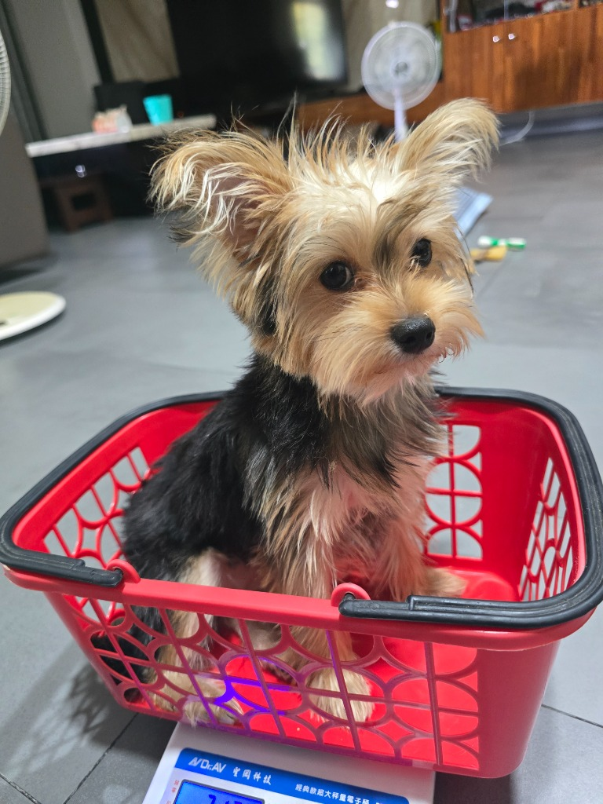

←→ to move · Space for next · F for full screen
Huang Yu-Jun
Information Management student. I build websites and write about code.
What I will cover
- Personal Information
- My Major
- Family
- Specialty
- Interests & Hobbies
- Personality & Appearance
- My Plan in College
Personal Information
- NameHuang Yu-Jun (黃宥鈞)
- BirthdaySeptember 6, 2007
- HometownChiayi
My Major
Information Management
Technology, data, and how people use them in organizations.
Family
My parents and me.
Plus 4 dogs and 1 cat.
I have no brothers or sisters.

Specialty
- WebsitesBuilding web projects from scratch
- C++APCS certified
- WritingA tech blog with 21 articles
I enjoy turning ideas into useful digital projects.
Interests & Hobbies
- On the trackGo-karting
- On screenRacing games and racing in general
- Every weekSports
- For funCreating websites
Personality & Appearance
- PersonalityENTJ
- HairBlack
- GlassesNone
My Plan in College
- Year 1Build a strong base in Python, C++, databases, and web basics.
- Year 2Study systems analysis, databases, and networks. Ship one complete website or app.
- Year 3Join a competition or an internship. Prepare for certifications.
- Year 4Finish a capstone project worth showing. Prepare for a job or graduate school.
Thank you.
- Emailcharlie960906@gmail.com
- InterestsRacing, sports, and web projects